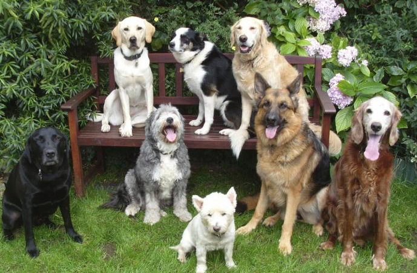

Обща информация за кучетата

Кучетата (Canis lupus familiaris) са средноголеми бозайници, подвид на вълците (Canis lupus), опитомен още от зората на човечеството.
Едни от първите домашни животни, кучетата се използват широко по целия свят и играят важна роля в ранните човешки селища.
Така например се смята, че заселването на Америка от хората би било невъзможно без използването на впрегатни кучета за пресичането
на Беринговия проток. Благодарение на специфичните им природни особености (остър слух, чувствително обоняние), кучетата се използват
и за много други цели, като лов, в пасищното животновъдство, за храна и защита, като домашни любимци. Днес броят на домашните кучета
по света се оценява на 400 милиона. През 15-те хиляди години от опитомяването на кучетата са се обособили няколко регионални групи
животни, чиито морфологични белези и поведение са формирани от окръжаващата ги среда и от техните функции. С придобиването на познания
в областта на генетиката, хората започват целенасочено да създават породи кучета, приспособени за определени цели. При този процес се
формират стотици различни породи, в резултат на което при кучетата се наблюдават повече поведенчески и физически вариации, отколкото
при всяки друг сухоземен бозайник. Например височината варира от двадесетина сантиметра при чихуахуа до около 80 сантиметра при
ирландския вълкодав, цветът може да бъде от бял през сив до черен и от светлокафяв до тъмнокафяв при голямо разнообразие на шарки,
козината може да бъде къса или дълга, рядка до подобна на вълна, права, къдрава или гладка. Породите се различават и по издръжливост,
поддаване на дресировка, бързина и други.